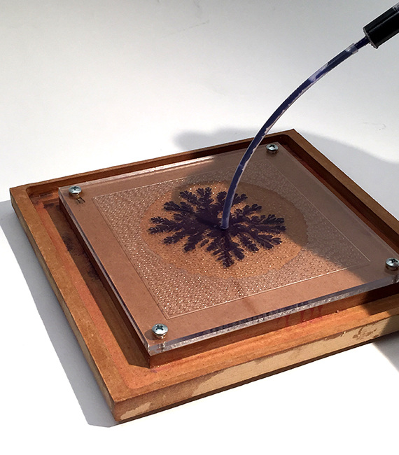

Mandelbrot set fractal
Mandelbrot set fractal
$\{c \in \mathbb C | z_n=z_{n-1}^2+c$
$\space\space\space\space\space|z_n| < \infty\}$
 Julia set fractal
Julia set fractal
$\{z_0 \in \mathbb C | z_n=z_{n-1}^2+c$
$\space\space\space\space\space|z_n| < \infty\}$

Hele shaw
$v = \nabla p$
$\Delta p = 0,\space p \in \Omega \setminus s$
$p = \gamma \mathscr{k}, \space p \in \partial \Omega$